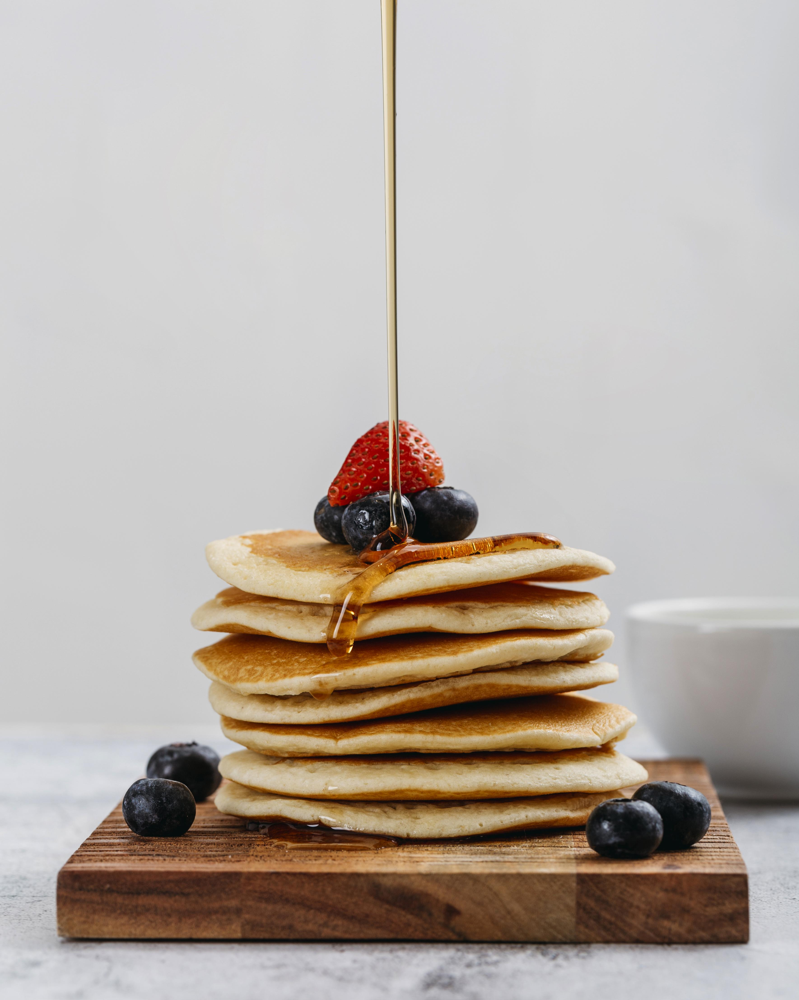

Pancakes

Description
Simple recipe for delicious stack of pancakes.
Cover them with your choice of topping.
Ingredients:
- 2 Large Eggs
- 2 cups 250ml milk (skim, low fat or full fat)
- 2 1/4 cups white self rasing flour*
Steps:
- Wisk the eggs and milk together.
- add in the flour and beat until the batter is smooth
- heat a pan over low-medium heat with oil - Remove Excess
- Pur 1/3 cup of batter per pancake - cook for 1 to 2 minutes
- flip and cook until golden brown
- transfer to plate - repeat
- Server immediately with your choosen toppings